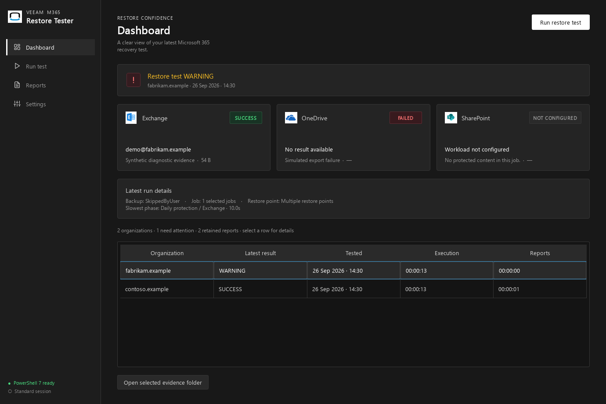
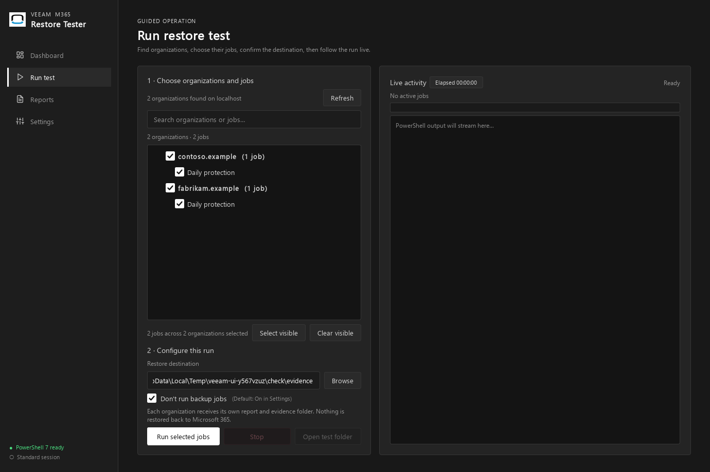
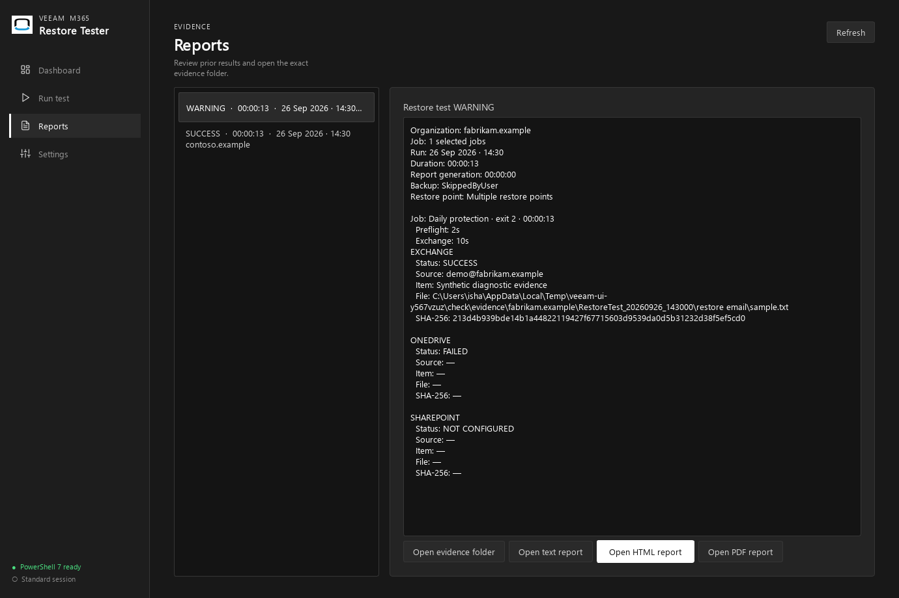
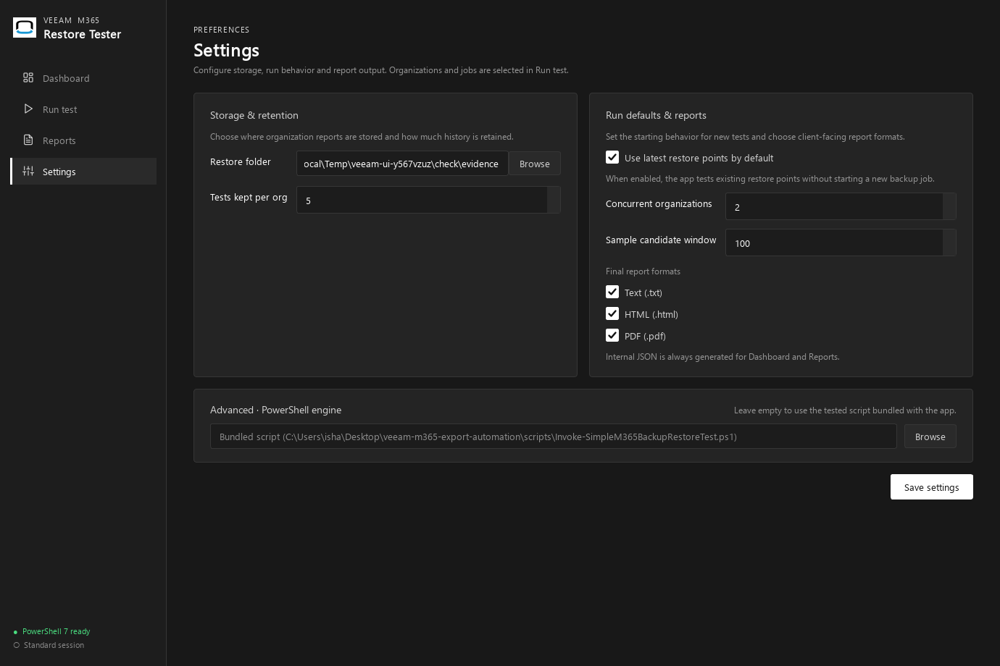

Veeam M365 Restore Tester
The problem
A backup job completing successfully doesn't prove that data can actually be restored when disaster strikes. Organizations running Veeam Backup for Microsoft 365 need a repeatable way to verify that Exchange emails, OneDrive files, and SharePoint documents can be extracted from restore points — not just that a backup job reported "success."
What I built
A standalone automation tool that connects to a Veeam Backup for Microsoft 365 server, auto-discovers organizations and jobs, selects random representative items from the latest restore points, extracts them locally (non-destructive — nothing is restored to production), and verifies their integrity with SHA-256 cryptographic hashes.
The tool covers three Microsoft 365 workloads:
- → Exchange Online — Extracts .msg email files from mailbox backup
- → OneDrive — Extracts documents from user drive backup
- → SharePoint Online — Extracts items from site backup
Architecture
The core engine is a PowerShell 7 script (Invoke-VB365OriginalRestoreTest.ps1) that uses the
Veeam Archiver PowerShell SDK to interact with backup sessions. A PySide6 (Qt) desktop application
wraps this engine with a process queue, organization workspace isolation, and automated retention cleanup.
Audit & reporting
Every test run produces structured evidence: JSON data, HTML reports, plain text summaries, and PDF audit documents with timestamps, sample file details, SHA-256 checksums, and pass/fail verdicts. These reports are designed to be delivered to a client as monthly compliance evidence.
Limitations I identified
During development, I discovered that SharePoint verification can fail even when the restore operation succeeds — the test account may lack site-level permissions to independently verify the restored content. The tool explicitly distinguishes between a failed restore and an item that couldn't be verified, rather than silently marking everything as successful.



